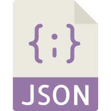

Главная
Главная
Python разработка - с нуля до профессионала. Python 3
Доступно и просто для новичков. Начните с основ и пройдите весь путь до создания собственных приложений!
ЧЕМУ ВЫ НАУЧИТЕСЬ?
Получите фундаментальное понимание языка программирования Python
Поймёте сложные темы, как декораторы, timestamp и др.
Типы данных
Форматирование строк
List, Dictionary and Set Comprehension
Множественное наследование
Модули и пакеты
Модуль pickle
Декораторы
Модуль Tkinter для создания интерфейсов приложений
Получите навыки Python по объектно-ориентированному программированию (ООП) в свое резюме
Приобретёте необходимые навыки Python, чтобы перейти в конкретные отрасли - machine learning, data science и т. д.
Вложенные циклы
Лямбда выражения
Файловый ввод/вывод
HTTP & API
Работа с базой данных
Модуль time
pytz package
BeautifulSoup
Получить курс
Фрагмент из курса
Программа:
1
Введение
Введение
ВАЖНО! ЧАВО - ЧАсто задаваемые ВОпросы
Заметка к заданиям
2
Установка инструментов Windows
Установка Python
Задание к лекции "Установка IntelliJ IDEA" для Windows
Установка IntelliJ IDEA
3
Установка инструментов Mac Os X
Установка Python
Задание к лекции "Установка IntelliJ IDEA" для Mac OS X
Установка IntelliJ IDEA
4
Основы Python
Hello World
Типы данных
Числа. int & float
Переменные
Строки
Строки. Indexing & Slicing
Свойства строк. Методы
Форматирование строк
Lists
Dictionaries
Tuples
Sets
Booleans. Операторы сравнения
Логические операторы
Цикл for
Цикл while
Некоторые часто используемые функции и операторы
List Comprehension
Dictionary and Set Comprehension
Вложенные циклы
Вложенные списки
5
Функции
Функции. Введение
Создание функций
*args. **kwargs.
Лямбда выражения
Область видимости переменных
6
ООП
Объектно-ориентированное программирование (ООП). Введение
Атрибуты
Методы
Методы класса
Наследование. Полиморфизм
Множественное наследование
Method Resolution Order (MRO)
Специальные (магические) методы
7
Модули и пакеты
Встроенные модули
Создание своих модулей
Внешние модули
__name__ and '__main__'
8
Файловый ввод/вывод
Чтение текстовых файлов
Запись текстовых файлов
Двоичная система счисления
Запись двоичных файлов
Модуль pickle
Модуль shelve
Работа с данными при помощи модуля shelve
Обновление данных при помощи модуля shelve
Конвертация словаря в объект shelve
9
Обработка ошибок
Типы ошибок
Вызов ошибок
try except
else finally
10
Итераторы и генераторы
Iterable & iterator
Custom iterable
Generator functions
Бесконечные генераторы
Generator expressions
11
Декораторы
Higher order functions
Знакомство с декораторами
wraps
Тестирование скорости
Проверка аргументов
Декораторы с аргументами
12
Тестирование
Assertions
unittest
Test Driven Development (TDD)
Методы unittest
Методы setUp() и tearDown(). Тестирование классов
13
HTTP & Api
Что такое HTTP
Модуль requests
Что такое API
Работа с API
Earthquake App. Задание
Earthquake App. Решение
14
Web scraping
Web Scraping. Введение
HTML & CSS
BeautifulSoup
Извлечение данных
Извлечение данных иерархически
Quotes scraping
15
Работа с CSV файлами
Работа с CSV файлами. Введение
Чтение файлов. reader()
Чтение файлов. DictReader()
Запись в файл. writer()
Запись в файл. DictWriter()
Quotes scraping. Задание
Quotes scraping. Решение
16
Работа с базой данных
Работа с базой данных. Введение
Создание базы данных
Вставка данных
Чтение данных
Редактирование и удаление данных
Создание базы данных при помощи Python
Вставка данных при помощи Python
Чтение, редактирование и удаление данных при помощи Python
SQL Injection
Save Earthquakes Task
Save Earthquakes Decision
17
Advances modules
Модуль collections. Counter
Модуль collections. defaultdict
Модуль collections. namedtuple()
Модуль time. Часть 1
Quiz. Задание
Quiz. Решение
Модуль datetime. pytz package
Извлечение информации о timezone
Модуль datetime. Класс date
Модуль datetime. Класс datetime
Модуль datetime. Класс timedelta
Timezones. Задание
Timezones. Решение
Работа с датами и временем. Best practices
18
GUI
GUI - Graphical User Interface. Tkinter. Введение
Размещение виджетов
Pack Geometry Manager
Place Geometry Manager
Grid Geometry Manager
ttk module
Обзор интерфейса
Tk concepts
ttk widgets. Frame
ttk widgets. Label
ttk widgets. Button, Checkbutton, Radiobutton
ttk widgets. Entry, Combobox
Grid Geometry Manager. UI example
Приложение "High five!". Pack Geometry Manager
Приложение "High five!". Grid Geometry Manager
Temperature converter. Задание
Temperature converter. Решение. Часть 1
Temperature converter. Решение. Часть 2
19
Основы Django
Чему вы научитесь в этом курсе?
Web Development
Установка Django
Краткий обзор проекта
Urls.py
Templates
Git
Создаём reverse.html
Получение текста
Используемые технологии

Получить курс